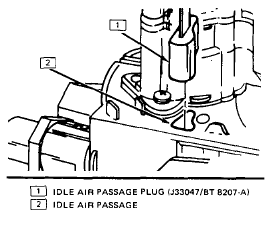

Go Home
Site Map
Go Home
Site Map
Idle Stop
Yes I know... Idle stop usually doesn't need adjusting and is seal on many engines.
Warning: Do not use a ECM Scan tool to make this adjustment! ECM scanner mess with timing and gives you higher RPM.
Notes:
Use a good tachometer, not the dash tach. It is easer and more accurate.
Once you are done, clear any errors that may have been set in the ECM.
300 TBI, 1984-86 L4 Fiero
You need a special tool, GM Tool J-33047, to plug the Idle Air passage.
- Plug vacuum port on TBI unit for Thermac.
- Connect a tach to engine
- Start engine, Auto trans in Park (Man trans in Neutral), and allow engine RPM to stabilize.
- Install tool J-33047 in idle air passage of throttle body. Be certain that tool is sealed and no air gets thru. (See image below.)
- Using Torx #20, turn throttle stop until:
- Stop engine and remove the tool from TBI unit.
Auto trans, 500 +/-25 RPM
Man trans, 775 +/-25 RPM

Source: 1986 Fiero Service Manual, page 6E2-C2-8.
700 TBI, 1987-88 L4 Fiero
- Plug any vacuum port, as required.
- Jumper ALDL terminals A & B.
- Turn on key, engine off, and wait 45 seconds. This will close IAC pintle.
- Unplug IAC while key is still on.
- Turn key off and remove the ALDL jumper.
- Start car and set Idle Stop screw for 600 +/-50 RPM. (550 - 650 RPM is fine.)
- Shut off the car and plug the IAC in.
- Replug any vacuum ports.
Source: 1988 Fiero Service Manual, page 6E2-C2-12 thru 13.
Port Injection, 1985-88 V6 Fiero
- Plug any vacuum port, as required.
- Jumper ALDL terminals A & B.
- Turn on key, engine off, and wait 20 seconds. This will close IAC pintle.
- Unplug IAC while key is still on.
- Turn key off and remove the ALDL jumper.
- Start car and set Idle Stop screw for 800 +/-50 RPM. (750 - 850 RPM is fine.)
- Shut off the car and plug the IAC in.
- Replug any vacuum ports.
Source: Based on 1986 Fiero Service Manual, page 6E3-A-56 item 3.